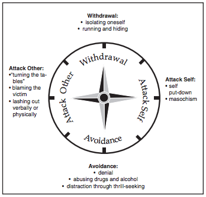

The Compass of Shame
Compass of Shame, article by Harold Grossman, MD, FRCP(C)
Here's an Excerpt to get Us Started:
In the 1960's, Dr. Sylvan Tompkins investigated, through the use of videotape analysis, the primary instinctual affects (emotions of the moment) of infants. He described nine innate primary affects which he said were truly constitutional rather than learned responses. Two are positive: Joy and Excitement. One is neutral: Startle. The negative six affects that one can observe are: Fear, Disgust(tongue out), Dissmell(lifting away of the nose), Rage, Despair, and most importantly, Shame (eyes averted, head down). Shame is supposed to be a protective response to keep us connected to the group rather than wondering off dangerously by ourselves. It has been given to usto help ussurvive and to eliminate it would not be safe.
Roughly Two Peoples when it comes to Dealing with Shame:
1) The well balanced and mature. When met with shame this person reflects on times when they were truly loved and accepted and gains equilibrium. They then go on to learn from the experience.
2) Those that cannot gain equilibrium on our own, react in one of the following four ways:
- North: "Withdrawal"
- East: "Attack Self"
- South: "Avoidance"
- West: "Attack Others"
Dealing with Conflict
A Story from my Youth
We all remember living at home, how our parents provided and how they "fell short." of our expectations at times.
This is one of those stories
1) Discuss a time you had an emotional conflict with someone. What was it about? What Happened?
I am relaying events that occured while living at home with my parents. Dinner has finished and my Dad and I have started up a discusssion/debate, which was normal in our house. The topic is no longer remembered, however it was not the source of conflict. We discussed/debated for around 15 minutes. At this point, 6 o'clock has arrived and my Dad stands up and informs me that he is going in the other room to watch the news. Feeling slighted/disapproved of, I follow him. This is very unsettling to my Dad and he informed me that I needed to leave him alone while he watched the news.
2) What was the source of the conflict?
My Dad seening the news as more important than continue our engaging discusssion is the source of conflict for me. I believe that this sprung from my desire for approval from my Dad, as well as a fair portion of selfishness.
3) How did you handle that conflict?
I followed the wonderful man into the other room and continued to talk as he turned on the news. Once the news was on I continued. Yes, I continued. Now I have 3 children and see things differently and almost can't believe that I did this. At the time I felt compelled, almost carried along as though not by my own choosing.
4) Did your actions make the conflict better or worse?
My actions created a deeper conflict.
5) If you could go back, what would you do differently, if anything?
I would appreciate that he has worked a full day. That he enjoys watching the news. I would let him watch the news in peace and then ask if we could continue our conversation/debate after he was finished.
6) What did you learn from this experience?
Each person is their own person. Amazingly each of us needs to be respected and honored. My father was honoring me by engaging me in conversation/debate after a long day's work. He would have talked to me later as well.